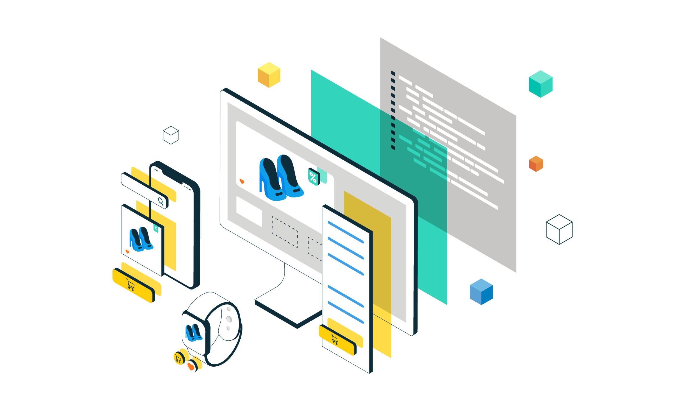
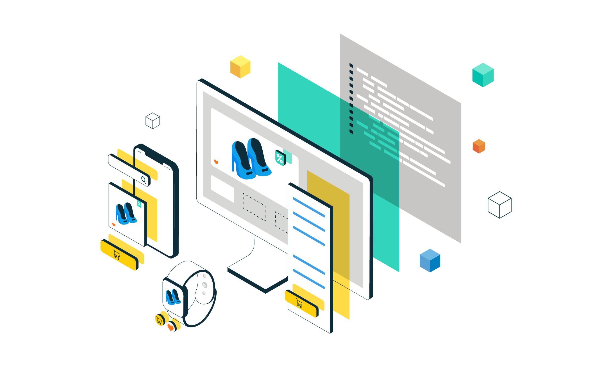

Salom! bugun biz Frontend dasturlash nma ekanligini bilib olamiz!
Frontend - bu foydanaluvchilar ko'radigan veb-sayt qismi. U Dizayn. tugmalar . rasmalar va boshqa elemeentlarni o'z ichiga oladi.
 
 
Frontend haqida koproq bilish xahlaysizmi? Bu yerga bosing!
Frontend texnologiyalarni
Sayt yaratish uchta asosiy texnologiyadan foydanalinadi; HTML - sahifa tuzilishni yaratish uchun. CSS - dizyn va ko'rinishni sozlash uchun. Java Script - saytni interaktiv qilish uchun.
Quydagi videoni tomosha qilib, saytlarning qanday yaratilishini bilib oling!